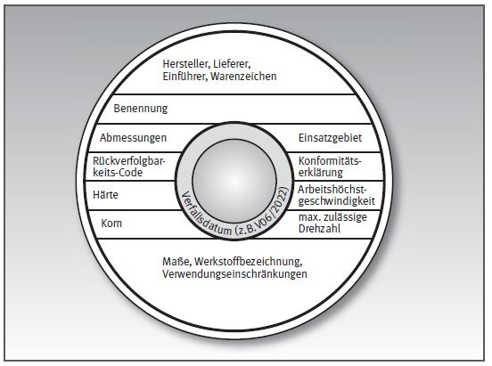
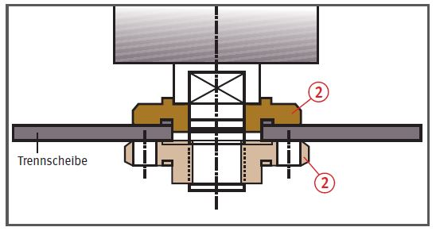
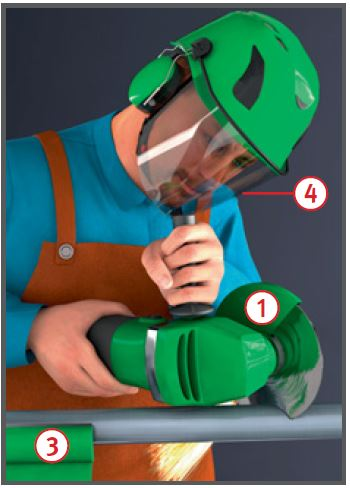
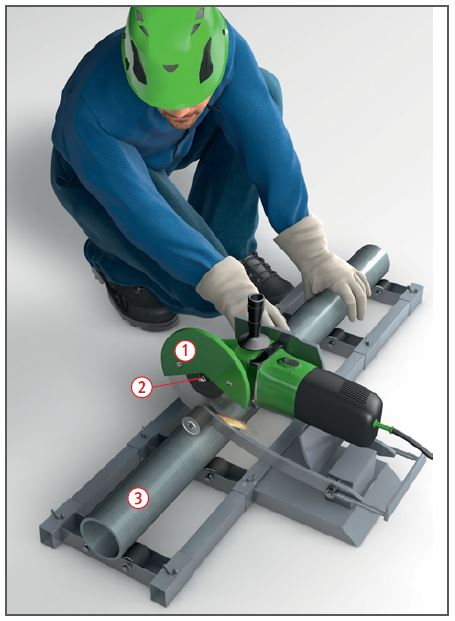

Handtrennschleifmaschinen
|
|
Anforderung an die Kennzeichnung (beispielhafte Darstellung)

Gefährdungen
- Personen können von wegfliegenden
Teilen getroffen werden.
- Trennscheiben können durch Verkanten zerspringen und zu Verletzungen führen.
Kennzeichnung
- Nur gekennzeichnete Schleifmaschinen
und Trennscheiben verwenden.
- Zulässige Arbeitshöchstgeschwindigkeit
entsprechend der Kennzeichnung beachten.

Ordnungsgemäß aufgespannte Trennscheibe bis 230 mm Außendurchmesser


Schutzmaßnahmen
- Handtrennschleifmaschinen
müssen mit Schutzhauben ausgerüstet sein
 .
.
- Zum Aufspannen nur gleich
große, zur Maschine gehörende Spannflansche verwenden und mit Spezialschlüssel aufspannen
 .
.
Empfehlung: mindestens 41 mm
Durchmesser! Vor dem Aufspannen Klangprobe durchführen.
- Werkstücke vor dem
Bearbeiten sicher festlegen
 .
Beim Arbeiten sicheren Standplatz einnehmen.
.
Beim Arbeiten sicheren Standplatz einnehmen.
- Maschine stets beidhändig führen – nicht verkanten!
- Trennscheiben nicht zum Seitenschleifen verwenden.
- Schutzbrille
 und Gehörschutz benutzen.
und Gehörschutz benutzen.
- Wenn gesundheitsgefährdende Stäube entstehen, Atemschutz verwenden.
- Richtige Trennscheibe entsprechend der auszuführenden Arbeit auswählen.
- Drehzahl der Schleifmaschine mit zulässiger Umdrehungszahl der Trennscheibe vergleichen. Sie darf nicht höher sein als die der Trennscheibe.
- Schleifwerkzeuge, die nicht für alle Einsatzzwecke geeignet sind, müssen mit entsprechenden Verwendungseinschränkungen (VE) gekennzeichnet sein.
- Schleifscheiben nicht über das Verfallsdatum hinaus benutzen.
- Am jeweiligen Einsatzort ermitteln, ob eine Brand- und Explosionsgefährdung vorhanden ist, und bei Bedarf geeignete Maßnahmen ergreifen.
- Maschine bestimmungsgemäß entsprechend der Betriebsanweisung des Unternehmers, bzw. der Bedienungsanleitung des Herstellers, benutzen.
Arbeitsmedizinische Vorsorge
- Arbeitsmedizinische Vorsorge
nach Ergebnis der Gefährdungsbeurteilung
veranlassen (Pflichtvorsorge)
oder anbieten (Angebotsvorsorge).
Hierzu Beratung durch den Betriebsarzt.
07/2021